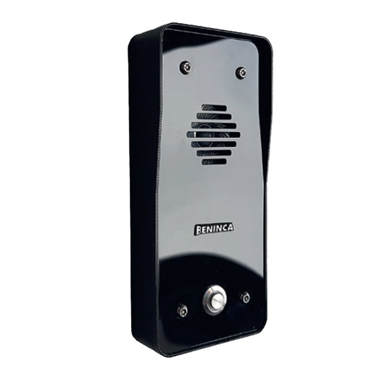

Э-материал тизимга
келиб тушган хабарлар
келиб тушган хабарлар
14330
2025
81.6%
26020
2025
20 мартдан
15 майгача
15 майгача
5764
2025
12.4%
9990
2025
Юритувдаги
ҳужжатлар
ҳужжатлар
371
2025
73.3%
417
2025
20 мартдан
15 майгача
15 майгача
534
2025
7.5%
574
2025
Жиноят иши қўзғатишни
асоссиз рад этиш ҳолатлари
39
асоссиз рад этиш ҳолатлари
Уз вактида жиноят иши
кузгатилган холатлари
105
кузгатилган холатлари
ЖАМИ
39
Жиноят иши
қўзғатилган
6
қўзғатилган
Бекор
қилинган
33
қилинган
Оғир ва ўта оғир жиноятларга қарши курашиш ва олдини олиш
ҳаммаси бўлиб қайд
этилган жиноятлар
7012025
-4.0%
6732025
154
26.5%
85%
10.2%
олдини олиш мумкин
бўлган жиноятлар
5062025
-19.4.0%
4082025
76%
18.6%
10%
2.4%
аниқланган жиноятлар
1952025
28.7.0%
2512025
72%
28.6%
56%
22.3%
ДРБ ва ФАCE-ИД
камералар 110та
камералар 110та
PTZ-камера
24та
Видеокузатув
233та
Ташвиш тугмаси
168та

Домофон 121та
Маъмурий
назоратдагилар 47та
назоратдагилар 47та
Рецидивистлар
60та
Ичкиликка
ружу қўйган 319та
ружу қўйган 319та
Профилактик
ҳисобдагилар 1591та
ҳисобдагилар 1591та
Судланганлар
204та
Гиёҳванд
47та
ўтказилган
тадбирлар
Аниқланган муаммолар652
Кўрсатилган ёрдамлар479
Ҳал этиш жараёнида151
нотинч оила
16та
4ta
Ҳимоя ордери
берилди
нотинч оила
16та
4ta
Ҳимоя ордери
берилди
Ўзаро
низолашган 17та
16ta
низолашган 17та
Ҳимоя ордери
берилди
Шарий никоҳ
34та
23ta
Ҳимоя ордери
берилди
ичкиликка ружу қўйган
50та
12ta
Ҳимоя ордери
берилди
рухий касал
13та
8ta
Ҳимоя ордери
берилди
Содир этилган жиноятлар доирасида
камчиликка йўл қўйилган раҳбарлар 5ta
камчиликка йўл қўйилган раҳбарлар 5ta
хуқуқбузарликларни содир этишга
мойил бўлган ёшлар 70ta
мойил бўлган ёшлар 70ta
касбга
йўналтириш 6ta
йўналтириш 6ta
ишга
жойлаштириш 12ta
жойлаштириш 12ta
ижтимоий-маиший муаммо ҳал этилди
42ta
хуқуқбузарликларни содир этишга
мойил бўлган 9-11 синф битирувчи 57ta
мойил бўлган 9-11 синф битирувчи 57ta
ота-онаси билан
суҳбат ўтказилди 25ta
суҳбат ўтказилди 25ta
обрўли шахсларга
бириктирилди 48ta
бириктирилди 48ta
индивидуал профилактик тадбирлар
ишсиз
647ta
бандлиги таъминланди
193ta
ижтимоий муаммо ҳал этилди
404ta
объектлар
объектлар
922ta
қўриқловга олинди
155ta
бозорлар
8ta
ташвиш тугма
ўрнатилди (SOS) 20ta
ўрнатилди (SOS) 20ta
хонадонлар
хонадонлар
12541ta
қўриқловга олинди
256ta
Bektemir
Olmazor
Uchtepa
Mirobod
Sergeli
Yunusobod
Yangihayot
Shayhontohur
Chilonzor
Yakkasaroy
Yashnaobod
Mirzo Ulug'bek
содир этилган жиноятлар
2025 йил 4 ой давомида
Қозиробод
Оғир ТЖE 1та
Енгил ТЖE 1та
Номусга тегиш 1та
Талончилик 1та
Ўғирлик 7та
Ал-Хоразмий
Қотиллик 1та
Енгил ТЖE 1та
Безорилик 1та
Бошқа жиноятлар 1та
Бешёғоч
Ўртача оғир 1та
Енгил ТЖE 1та
Ўғирлик 4та
Меҳржон
Енгил ТЖE 1та
Талончилик 1та
Ўғирлик 5та
Навбаҳор, бектўпи ва 3-катта чилонзор
тарбияси оғир,
вояга етмаганлар 184та
"оила-маҳалла-мактаб" тизимивояга етмаганлар 184та
иш олиб борилади
яккабоғ
оғир тоифадаги
ёшлар орасида 7та
индивидуал профилактик ишлар олиб борилади
ёшлар орасида 7та
яккабоғ, бешқўрғон ва хирмонтепа
нотинч оила
8та
оғир тоифадаги
ёшлар орасида 12та
оилаларни муаммолариёшлар орасида 12та
ҳал этилди
яккабоғ. навбаҳор ва 2-катта чилонзор
ичкиликка ружу қўйган
119та
гиёҳванд
6та
рухий касал
10та
"оила-маҳалла-мактаб" тизимииш олиб борилади